1. 01-calm-today
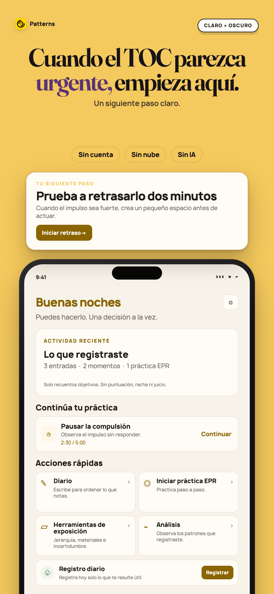
Apple 1290×2796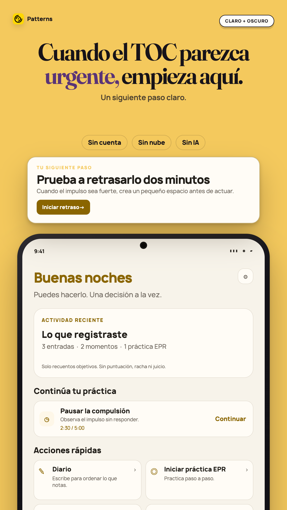
Play 1080×1920Pantalla Hoy de Patterns con recuentos objetivos y una acción para retrasar una compulsión dos minutos.
2. 02-delay-the-urge
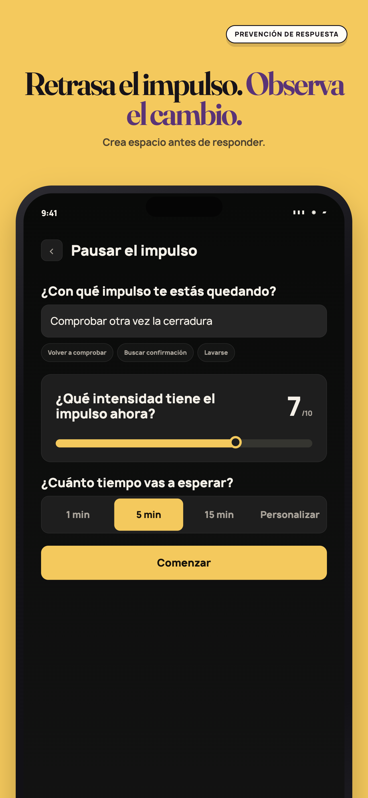
Apple 1290×2796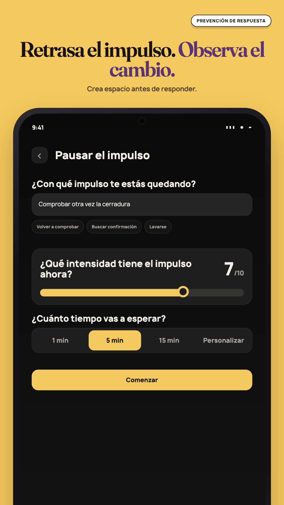
Play 1080×1920Configuración para retrasar una compulsión con descripción, intensidad registrada y tiempo de espera.
3. 03-build-your-exposure-ladder
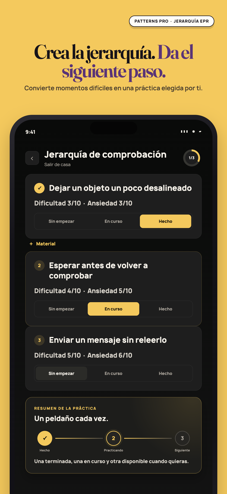
Apple 1290×2796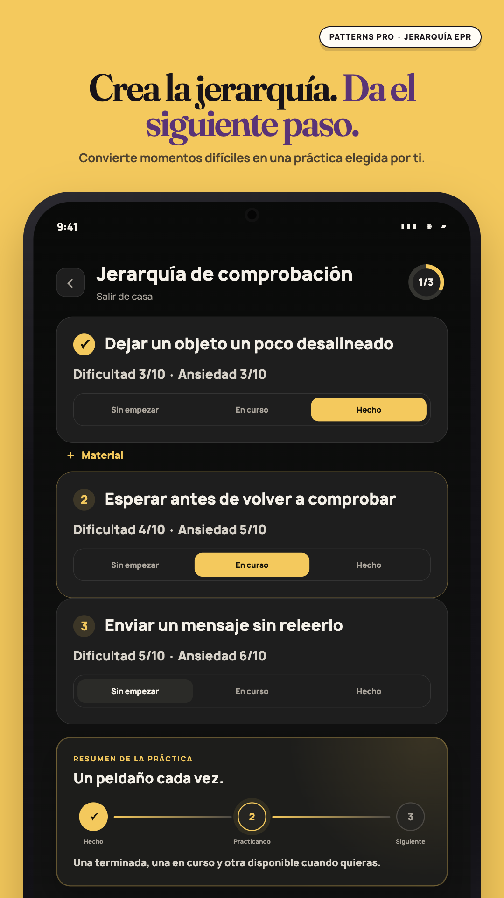
Play 1080×1920Jerarquía de exposición con tres pasos propios y etiquetas de texto para cada estado de práctica.
4. 04-see-patterns-not-judgments
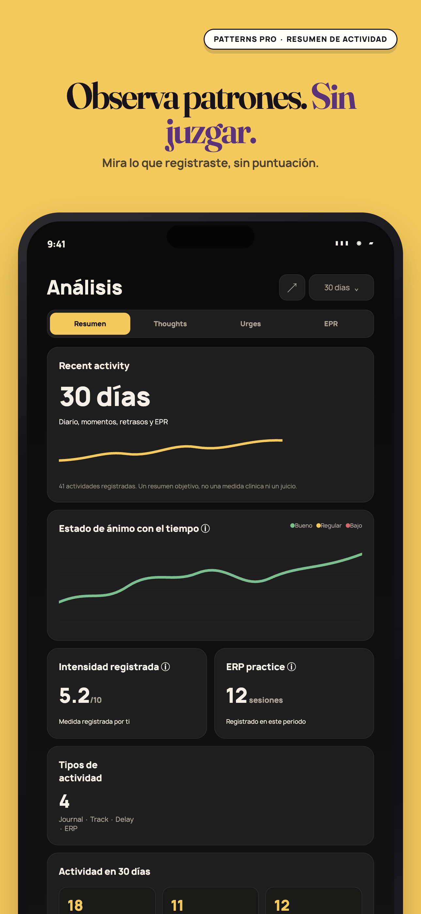
Apple 1290×2796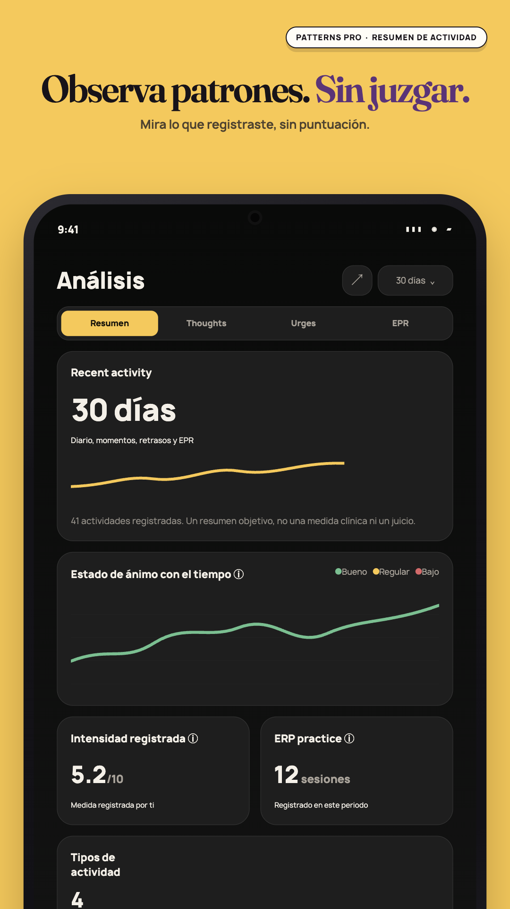
Play 1080×1920Insights tranquilos con recuentos objetivos de diario, retrasos y EPR, sin puntuación ni racha.
5. 05-no-ai-to-ask
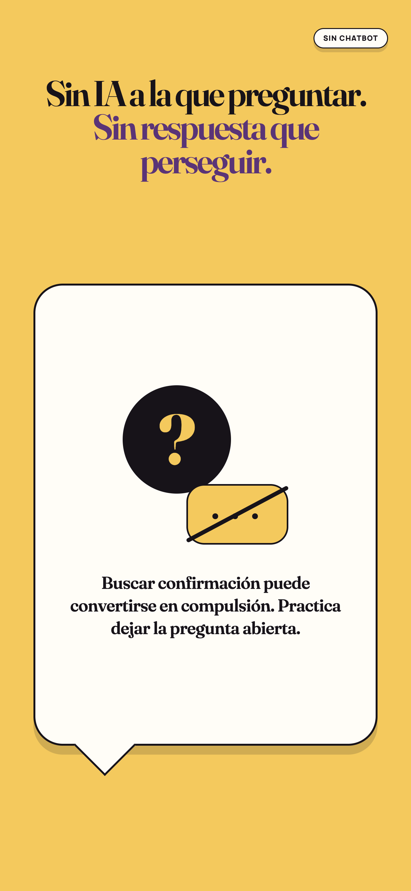
Apple 1290×2796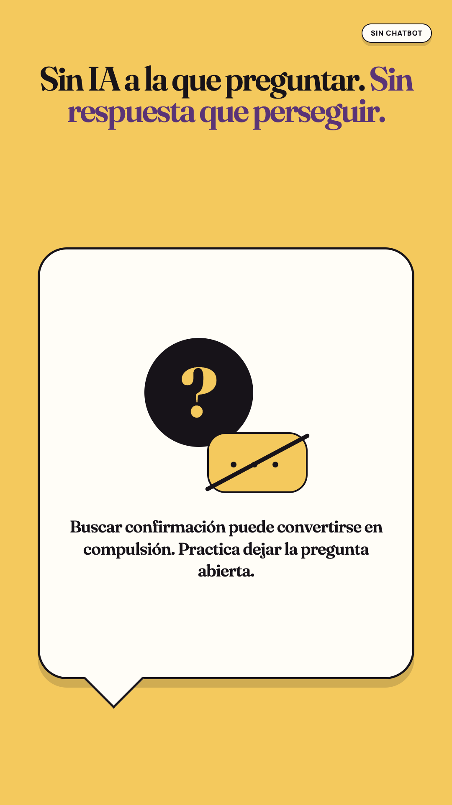
Play 1080×1920Mensaje que explica que Patterns no ofrece un chatbot para obtener confirmación inmediata.
6. 06-nothing-leaves-your-phone
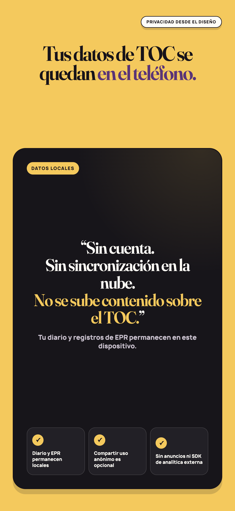
Apple 1290×2796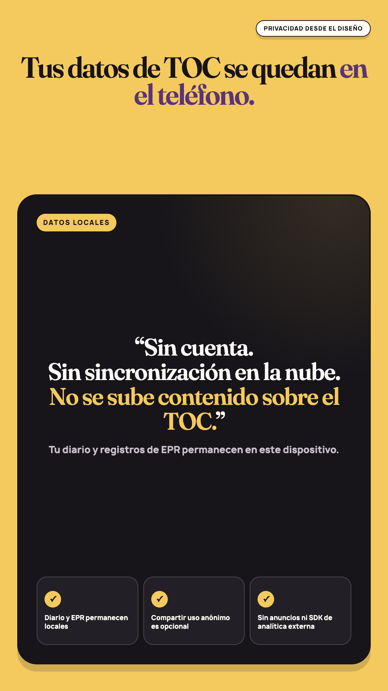
Play 1080×1920Tarjeta de privacidad que indica que diario y EPR permanecen en el dispositivo salvo exportación manual.
7. 07-private-journaling
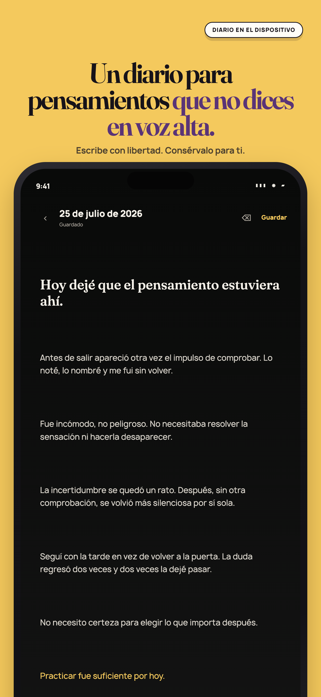
Apple 1290×2796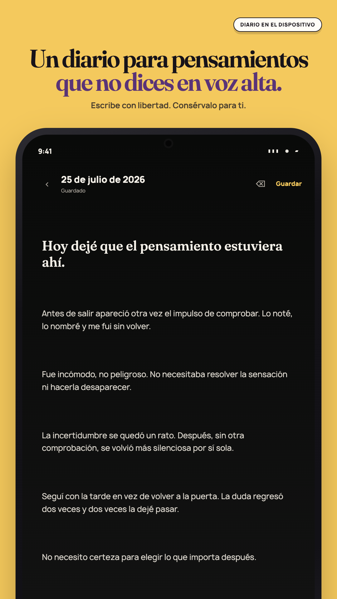
Play 1080×1920Editor de diario privado en el dispositivo con estado guardado y controles de formato.
8. 08-patterns-pro
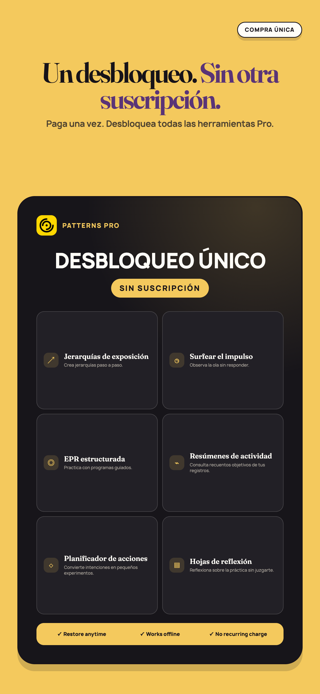
Apple 1290×2796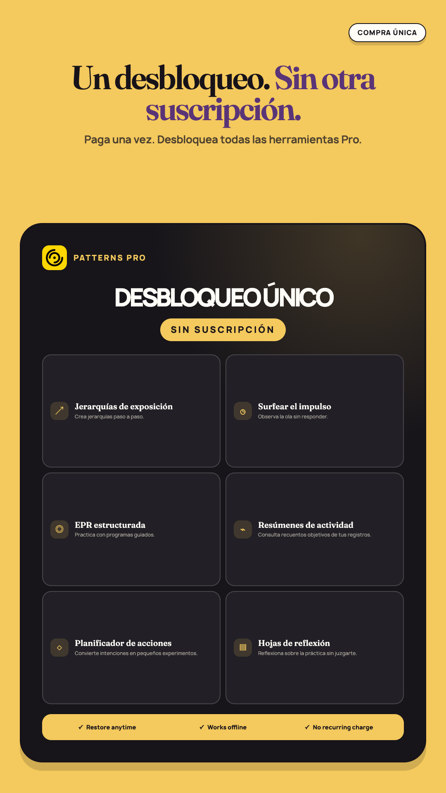
Play 1080×1920Compra única de Patterns Pro con la lista de herramientas de autoayuda y reflexión incluidas.
Google Play feature graphic
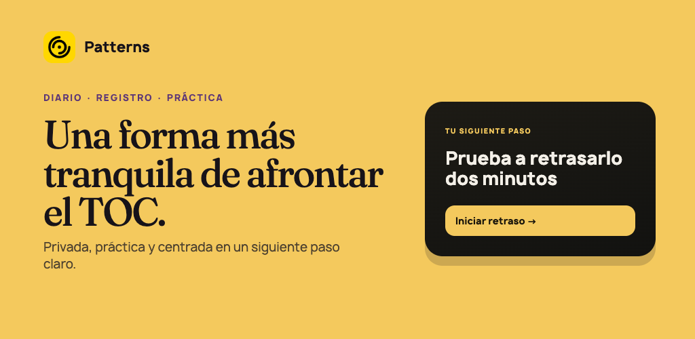
Play 1024×500Una forma más tranquila de afrontar el TOC. Privada, práctica y centrada en un siguiente paso claro.